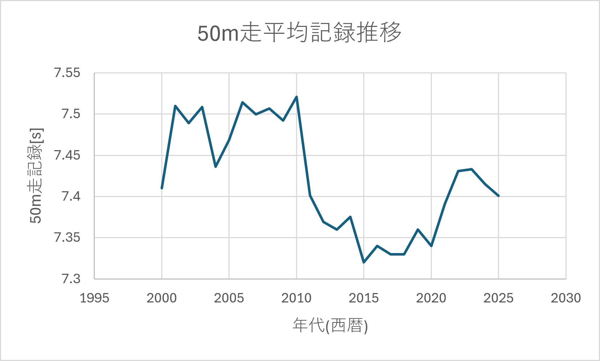
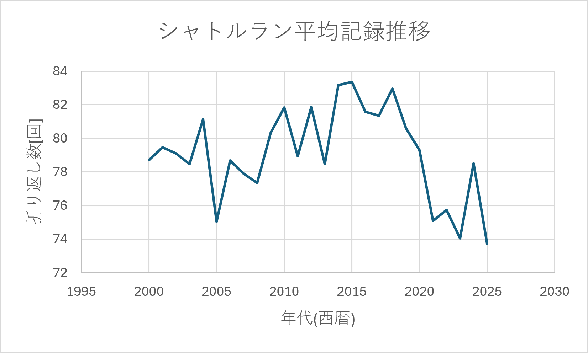
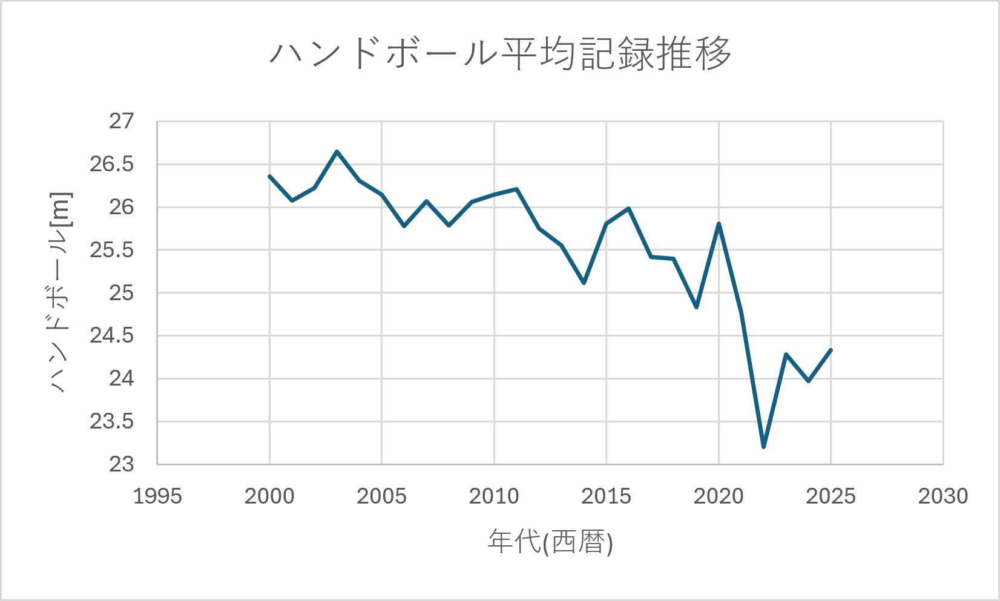

としてe-Statに公開されている新体力テストので結果のデータから、「50m走」「ハンドボール」「シャトルラン」の結果を対象とする。
対象は幅広い年齢であるため、今回は「18歳」のデータのみを対象とする。これらのデータに対し、減少または増加傾向を示すなら、その原因として考えられ要因を仮説として立て、そのデータと着目した結果に対し相関係数を求める。2データ間に相関があれば、原因である可能性がある。
相関係数とは、あるデータ群xと別なデータ群yの間に存在する関係の強さを示す指標である。相関係数rは常に-1から1の間で値を取る。1に近いほど「正の相関」がある。これはデータ群xが増加傾向であった時、もう一方のデータ群yも増加傾向を示す。-1に近いほど「負の相関」がある。これは、データ群xが増加傾向にある時、もう一方のデータ群yが減少傾向を示すことを表している。0に近ければ、それら2つのデータ群は関係が薄いことを示している。0に等しければ、それら2つのデータ群に関係性はない。
相関係数は以下の手順で求めることができる。
1.各データ群の平均値を求める。
2.各データ群のそれぞれのデータ1つずつに対し、「その値-そのデータ群の平均値」で求めることができる「偏差」を求める。
3.各データ群のすべての偏差を掛け合わせたものをデータの総数nで割った「共分散」を求める。
4.各データ群の偏差の2乗の和である「標準偏差」を求める。
5.「データxの標準偏差*データyの標準偏差」で共分散を割る。
これによって相関係数rを求めることができる。
図1に「50m走」、図2に「ハンドボール投げ」、図3に「シャトルラン」の2000年から2025年までの結果の推移を示す。


